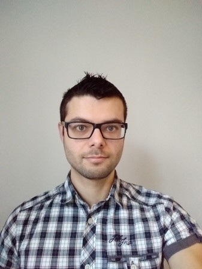

Who am I?

Hello, my name is Jonathan Eeckhout. I am 27 years old and I come from Belgium.
I am a professional embedded software engineer and work as a partime freelancer.
I am always been very interested in technologies. Since I was young I wanted to know how things work.
If I hear a device making a funny sound I would take it apart and check where this sound was comming from.
This is why I enventually choose to become an engineer.
I have a master degree in the industrial science with the specialization in intelligent electronics.
In October 2015 I started working at Alcatel-Lucent (now Nokia) as a FPGA designer.
Here I was involved in designing a FPGA chip for fiber to vdsl.
In May 2016, I joined VeroTech as a Software / Electronic consultant.
In August 2016 I started working as an consultant at SoftAtHome as an embedded linux c developer.
Since April 2018 I started working as an employee at SoftAtHome.
First I developed features for the Internet of Things on a home gateway or setup boxes.
Recently I changed to developing networking features.
Beside my work I develop my own projects. These projects are not limited to one specific language or target.
With these projects I try to improve my current skills or learn new ones.
My skills
- C prorgamming
- Embedded Linux
- LUA scripting
- bash/scripting
- Socket programming
- Full osi (7 networking layers) developer
- Android app developer
- Java
- HTPP/CSS web development
- Javascript/Nodjs
- Python
- C++
- FPGA/VHDL
- Bare metal programming
- Assembly
- Digital design
- Raspberry Pi
- Arduino
- Pic18fxxxx
- Arm A9
My hobbies
- Running
- Mountainbiking
- Riding my racebike
- Obediance training with my dog